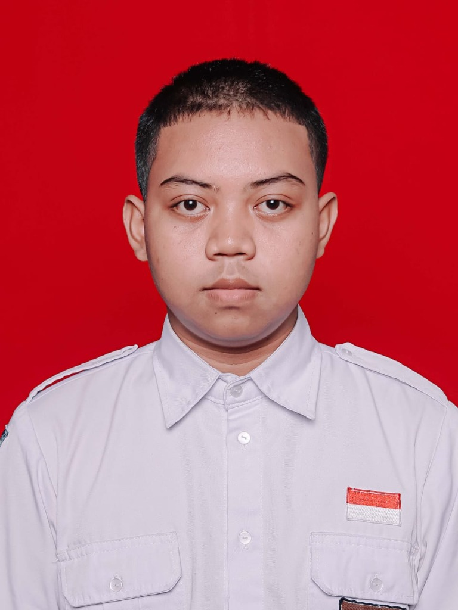

KAMARUL ARIFIN
MUZAFFAR
Pengembang Web & Mobile · Kecerdasan Buatan (AI)
Siswa SMK Tunas Harapan Pati jurusan TJKT yang berfokus pada pengembangan aplikasi berbasis AI, web, dan game edukasi. Berpengalaman merancang sistem digital yang bermanfaat dengan logika kode yang bersih dan terstruktur.
SMK TUNAS HARAPAN
PATI · TJKT

Kamarul Arifin M.
Pengembang Web & AI
Tentang Saya
Siswa SMK Tunas Harapan Pati jurusan Teknik Jaringan Komputer dan Telekomunikasi (TJKT) yang memiliki minat tinggi pada bidang Artificial Intelligence (AI), Web & Mobile Development, Internet of Things (IoT), dan jaringan komputer. Berpengalaman mengembangkan aplikasi berbasis AI, web, dan game edukasi serta aktif berprestasi di kompetisi teknologi nasional. Memiliki kemampuan analisis, berpikir kritis, pemecahan masalah, serta siap bekerja secara mandiri maupun dalam tim.
Top 10 Nasional
LKS Artificial Intelligence (AI) 2026
Juara 1
Pelajar Pati Action (PPA) 2024
Nilai Akhir: 88,79
SMK Tunas Harapan Pati (TJKT)
Stack Teknologi
Teknologi dan alat yang saya gunakan dalam pengembangan perangkat lunak dan sistem jaringan.
Kecerdasan Buatan (AI)
5 alatPengembangan Web & Mobile
8 alatBahasa Pemrograman
5 alatJaringan & IoT
6 alatAlat & Workflow
7 alatKeahlian Non-Teknis
6 alatProyek Unggulan
Solusi digital yang praktis dan dibuat dengan kode yang bersih serta tujuan yang jelas.
ATLAS MBG
Aplikasi Tracking dan Layanan Asupan Siswa
Aplikasi berbasis web untuk mendukung pengelolaan dan pelacakan Program Makan Bergizi Gratis (MBG). Merancang antarmuka pengguna yang responsif agar aplikasi mudah digunakan oleh siswa dan pihak pengelola.
- Pelacakan & distribusi asupan makanan siswa
- Manajemen kontainer & logistik makanan
- Dashboard analitik & rekapitulasi data
- Antarmuka responsif ramah pengguna
LERES-AI
Layanan E-Government Rekomendasi & Edukasi Smart - AI
Chatbot cerdas berbasis Artificial Intelligence sebagai layanan informasi publik yang cepat dan akurat. Mengimplementasikan teknologi Retrieval-Augmented Generation (RAG), Google Gemini API, dan ChromaDB.
- Chatbot AI interaktif layanan publik
- Implementasi arsitektur RAG (Retrieval-Augmented Generation)
- Integrasi Google Gemini API
- Basis data vektor ChromaDB berkecepatan tinggi
Journey to Logic
Game Edukasi Logika & Pemrograman
Game edukasi interaktif berbasis Unity untuk melatih kemampuan logika dan pemecahan masalah (problem solving). Merancang alur teka-teki logika gerbang boolean dan mekanisme kontrol permainan yang dinamis.
- Simulasi gerbang logika (OR, XOR, NOT)
- Mekanika percabangan & perulangan edukatif
- Sistem kontrol pergerakan karakter & kamera dinamis
- Tantangan teka-teki logika berjenjang
Pengalaman
Pencapaian pengembang siswa yang teruji, praktik teknik langsung, dan implementasi teknis nyata.
Pengembang Web | ATLAS MBG
2026Peran: Ketua Tim Pengembang
Memimpin tim pengembang dalam perancangan dan implementasi aplikasi web tracking Program Makan Bergizi Gratis (MBG). Bertanggung jawab atas arsitektur database MySQL, logika backend Laravel, serta desain antarmuka pengguna yang responsif.
Pengembang Game | Journey to Logic
2026Peran: Ketua Tim Pengembang
Memimpin pengembangan game edukasi berbasis Unity untuk mengasah kemampuan berpikir logis dan pemecahan masalah. Merancang alur mekanik puzzle, implementasi script logika C#, dan interaksi visual game.
Pengembang AI | LERES-AI
2025 — 2026Peran: Anggota Tim Pengembang
Mengembangkan chatbot kecerdasan buatan untuk layanan informasi publik berbasis e-government. Mengintegrasikan teknologi Retrieval-Augmented Generation (RAG), Google Gemini API, dan ChromaDB untuk memberikan respon akurat.
Organisasi
Pengalaman kepemimpinan siswa dalam membangun tata kelola organisasi dan kolaborasi regional.
Forum OSIS Kabupaten Pati (FOSKAP)
2024 — 2026Forum OSIS Kabupaten Pati
Divisi: Divisi Ekonomi Kreatif dan KewirausahaanMengelola program kerja FOSKALA (FOSKAP Skala) melalui kegiatan kewirausahaan kreatif untuk mendukung pendanaan mandiri dan kemajuan organisasi pelajar se-Kabupaten Pati.
OSIS BATHARA SMK Tunas Harapan Pati
2024 — 2026SMK Tunas Harapan Pati
Divisi: Bendahara 1Mengelola tata kelola administrasi keuangan organisasi, menyusun laporan pembukuan kas berkala secara transparan, serta menyusun Lembar Pertanggungjawaban (LPJ) keuangan untuk setiap kegiatan sekolah.
Pendidikan
SMK Tunas Harapan Pati
Teknik Jaringan Komputer dan Telekomunikasi (TJKT)
📍 Pati, Jawa Tengah, Indonesia
Sertifikasi
Penyelesaian kursus, kompetensi, dan program pengembang yang telah diakui.